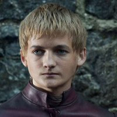

Joffrey Baratheon Personality Statistics
Statistics for the character of Joffrey Baratheon from Game of Thrones, courtesy of the Open-Source Psychometrics Project. Open-Source Psychometrics
| Personality Traits | Average Rating | Rank |
|---|---|---|
| impatient (not patient) | 98.3 | 1 |
| vengeful (not forgiving) | 98.2 | 1 |
| arrogant (not humble) | 98.2 | 1 |
| authoritarian (not democratic) | 98.1 | 1 |
| cruel (not kind) | 98 | 1 |
| villainous (not heroic) | 97.5 | 1 |
| selfish (not altruistic) | 97.4 | 1 |
| quarrelsome (not warm) | 97.2 | 1 |
| juvenile (not mature) | 97 | 1 |
| rude (not respectful) | 96.3 | 1 |
| moody (not stable) | 96.2 | 1 |
| bitter (not sweet) | 96.2 | 2 |
| demonic (not angelic) | 96.1 | 2 |
| angry (not good-humored) | 95.8 | 1 |
| poisonous (not nurturing) | 95.7 | 1 |
| mischievous (not well behaved) | 95.6 | 3 |
| extreme (not moderate) | 95.4 | 7 |
| cold (not warm) | 95.4 | 4 |
| impulsive (not cautious) | 95.2 | 1 |
| judgemental (not accepting) | 95.1 | 1 |
| soulless (not soulful) | 95.1 | 1 |
| foolish (not wise) | 94.9 | 1 |
| repulsive (not attractive) | 94.7 | 1 |
| insulting (not complimentary) | 94.4 | 2 |
| competitive (not cooperative) | 94.4 | 8 |
| ludicrous (not sensible) | 94.4 | 1 |
| debased (not pure) | 94.2 | 1 |
| close-minded (not open-minded) | 93.7 | 2 |
| cringeworthy (not inspiring) | 93.7 | 2 |
| ferocious (not pacifist) | 93.5 | 8 |
| loud (not quiet) | 93.4 | 5 |
| instinctual (not reasoned) | 93.3 | 2 |
| edgy (not politically correct) | 92.9 | 3 |
| vain (not demure) | 92.9 | 3 |
| hypocritical (not equitable) | 92.8 | 2 |
| ivory-tower (not blue-collar) | 91.7 | 9 |
| incompetent (not competent) | 91.7 | 1 |
| barbaric (not civilized) | 91.6 | 3 |
| flamboyant (not modest) | 91.4 | 12 |
| animalistic (not human) | 91.4 | 1 |
| weird (not normal) | 91.2 | 10 |
| feisty (not gracious) | 91.2 | 6 |
| lavish (not frugal) | 90.9 | 7 |
| rigid (not flexible) | 90.9 | 9 |
| jealous (not compersive) | 90.5 | 3 |
| young (not old) | 90.4 | 5 |
| lewd (not tasteful) | 90.3 | 2 |
| emotional (not logical) | 90.3 | 7 |
| biased (not impartial) | 89.9 | 7 |
| creepy (not disarming) | 89.9 | 2 |
| bourgeoisie (not proletariat) | 89.7 | 6 |
| suspicious (not trusting) | 89.6 | 30 |
| cunning (not honorable) | 89.5 | 13 |
| chaotic (not orderly) | 89.5 | 18 |
| deviant (not average) | 89.5 | 11 |
| slacker (not workaholic) | 89.4 | 7 |
| rich (not poor) | 89.4 | 50 |
| sheltered (not street-smart) | 89.1 | 3 |
| scandalous (not proper) | 89 | 15 |
| individualist (not communal) | 88.6 | 14 |
| plays hard (not works hard) | 88.4 | 11 |
| strict (not lenient) | 88 | 27 |
| humorless (not funny) | 87.9 | 6 |
| tense (not relaxed) | 87.8 | 23 |
| head@clouds (not down2earth) | 87.5 | 22 |
| heathen (not devout) | 87.5 | 3 |
| wild (not tame) | 87.2 | 34 |
| traitorous (not loyal) | 86.7 | 16 |
| bossy (not meek) | 86.6 | 74 |
| bold (not shy) | 86.6 | 152 |
| ugly (not beautiful) | 86.6 | 2 |
| disreputable (not prestigious) | 86.3 | 12 |
| anxious (not calm) | 85.9 | 22 |
| dunce (not genius) | 85.2 | 7 |
| puny (not mighty) | 85.1 | 6 |
| indulgent (not sober) | 85 | 31 |
| manicured (not scruffy) | 84 | 127 |
| dramatic (not no-nonsense) | 84 | 39 |
| spicy (not mild) | 83.2 | 48 |
| obsessed (not aloof) | 82.4 | 38 |
| assertive (not passive) | 82.2 | 134 |
| rebellious (not obedient) | 82.2 | 100 |
| unambiguous (not mysterious) | 82 | 13 |
| skeptical (not spiritual) | 81.8 | 81 |
| kinky (not vanilla) | 81.4 | 39 |
| gossiping (not confidential) | 81.3 | 45 |
| uninspiring (not charismatic) | 81.2 | 4 |
| resistant (not resigned) | 81 | 58 |
| whimsical (not rational) | 80.6 | 50 |
| monochrome (not multicolored) | 80.3 | 28 |
| dominant (not submissive) | 80 | 157 |
| lustful (not chaste) | 80 | 71 |
| short (not tall) | 79.9 | 51 |
| spontaneous (not scheduled) | 79.6 | 73 |
| disorganized (not self-disciplined) | 79.3 | 38 |
| unorthodox (not traditional) | 79.1 | 82 |
| sarcastic (not genuine) | 78.9 | 62 |
| expressive (not stoic) | 78.6 | 99 |
| low IQ (not high IQ) | 78.5 | 13 |
| nihilist (not existentialist) | 77.2 | 8 |
| direct (not roundabout) | 76.7 | 141 |
| rough (not smooth) | 76.6 | 51 |
| literal (not metaphorical) | 76.2 | 61 |
| sensitive (not thick-skinned) | 76.2 | 52 |
| chatty (not reserved) | 76 | 126 |
| decisive (not hesitant) | 76 | 200 |
| apprentice (not master) | 75.9 | 41 |
| lazy (not diligent) | 75.3 | 23 |
| suspicious (not awkward) | 75.1 | 138 |
| playful (not shy) | 74.9 | 180 |
| atheist (not theist) | 74.8 | 95 |
| extrovert (not introvert) | 74.6 | 118 |
| apathetic (not curious) | 74.2 | 11 |
| focused on the present (not focused on the future) | 73.9 | 49 |
| physical (not intellectual) | 73.8 | 82 |
| awkward (not charming) | 73.6 | 72 |
| unpolished (not eloquent) | 72.9 | 97 |
| idealist (not realist) | 72.8 | 80 |
| gregarious (not private) | 72.2 | 85 |
| empirical (not theoretical) | 72.1 | 47 |
| tiresome (not interesting) | 72.1 | 29 |
| worldly (not innocent) | 72.1 | 230 |
| sickly (not healthy) | 71.9 | 35 |
| work-first (not family-first) | 71.5 | 172 |
| driven (not unambitious) | 71.3 | 377 |
| repetitive (not varied) | 71.2 | 81 |
| self-assured (not self-conscious) | 71.1 | 255 |
| stick-in-the-mud (not adventurous) | 70.9 | 79 |
| real (not philosophical) | 70.3 | 166 |
| codependent (not independent) | 70.1 | 104 |
| crafty (not scholarly) | 70 | 223 |
| thin (not thick) | 69.8 | 140 |
| uncreative (not open to new experinces) | 69.6 | 56 |
| historical (not modern) | 69.2 | 132 |
| unprepared (not hoarder) | 68.9 | 50 |
| basic (not hipster) | 68.7 | 184 |
| hard (not soft) | 68.6 | 181 |
| hard (not soft) | 68.6 | 180 |
| sad (not happy) | 67.9 | 182 |
| guarded (not open) | 67.8 | 300 |
| helpless (not resourceful) | 67.7 | 26 |
| insecure (not confident) | 67.6 | 69 |
| backdoor (not official) | 67.5 | 216 |
| messy (not neat) | 67.3 | 129 |
| subjective (not objective) | 67.1 | 82 |
| clumsy (not coordinated) | 66.8 | 107 |
| straightforward (not cryptic) | 66.6 | 241 |
| sorrowful (not cheery) | 66.6 | 208 |
| libertarian (not socialist) | 66.1 | 133 |
| astonishing (not methodical) | 66.1 | 94 |
| pessimistic (not optimistic) | 66 | 134 |
| sporty (not bookish) | 65.9 | 145 |
| jock (not nerd) | 65.6 | 152 |
| autistic (not neurotypical) | 64.9 | 27 |
| imaginative (not practical) | 64.5 | 116 |
| cosmopolitan (not provincial) | 64.4 | 146 |
| child free (not pronatalist) | 64.3 | 289 |
| spontaneous (not deliberate) | 63.8 | 116 |
| stylish (not slovenly) | 63.8 | 300 |
| arcane (not mainstream) | 63.7 | 193 |
| depressed (not bright) | 63.5 | 125 |
| hurried (not leisurely) | 62.6 | 181 |
| night owl (not morning lark) | 61.6 | 280 |
| bold (not serious) | 61.3 | 242 |
| transient (not permanent) | 60.8 | 137 |
| conspiracist (not sheeple) | 60.7 | 307 |
| charming (not trusting) | 60.3 | 253 |
| serious (not playful) | 60 | 326 |
| fortunate (not unlucky) | 59.8 | 194 |
| emancipated (not enslaved) | 59.8 | 340 |
| gendered (not androgynous) | 59.8 | 528 |
| queer (not straight) | 58.9 | 53 |
| beta (not alpha) | 58.8 | 181 |
| low-tech (not high-tech) | 58 | 285 |
| purple (not orange) | 57.4 | 197 |
| highbrow (not lowbrow) | 56.8 | 323 |
| outlaw (not sheriff) | 56.3 | 274 |
| precise (not vague) | 56.1 | 365 |
| specialist (not generalist) | 55 | 340 |
| refined (not rugged) | 54.6 | 337 |
| luddite (not technophile) | 54.6 | 296 |
| avant-garde (not classical) | 54.4 | 223 |
| extraordinary (not mundane) | 54.2 | 415 |
| slothful (not active) | 54.2 | 77 |
| political (not nonpolitical) | 54 | 289 |
| artistic (not scientific) | 53.5 | 264 |
| creative (not conventional) | 53.4 | 314 |
| involved (not remote) | 52.9 | 452 |
| builder (not explorer) | 52.9 | 300 |
| armoured (not vulnerable) | 52.8 | 397 |
| outsider (not insider) | 52.8 | 348 |
| captain (not first-mate) | 52.8 | 278 |
| industrial (not domestic) | 52.6 | 335 |
| decorative (not utilitarian) | 52.5 | 188 |
| simple (not complicated) | 52.4 | 201 |
| feminine (not masculine) | 51.6 | 242 |
| literary (not mathematical) | 51.6 | 360 |
| 'right-brained' (not 'left-brained') | 51.4 | 205 |
| brave (not careful) | 50.6 | 409 |
| fast (not slow) | 50.3 | 445 |
| Most Similar Characters | Least Similar Characters |
|---|---|
| 1. Prince John (0.901) | 1. Francis Mulcahy (-0.756) |
| 2. Pierce Hawthorne (0.854) | 2. Derrial Book (-0.755) |
| 3. Lisa (0.842) | 3. Marmee March (-0.752) |
| 4. Sid Phillips (0.824) | 4. Hakoda (-0.745) |
| 5. Logan Delos (0.795) | 5. Anna Bates (-0.742) |
| Full Match List | Universe | % Match |
|---|---|---|
| 1. Joffrey Baratheon | Game of Thrones | 100% |
| 2. Prince John | Robin Hood | 95% |
| 3. George Bluth, Sr. | Arrested Development | 94% |
| 4. Leland Palmer | Twin Peaks | 93% |
| 5. Pierce Hawthorne | Community | 92% |
| 6. Draco Malfoy | Harry Potter | 91% |
| 7. Lord Voldemort | Harry Potter | 91% |
| 8. Bellatrix Lestrange | Harry Potter | 91% |
| 9. Ben Chang | Community | 91% |
| 10. Roy Petty | Ozark | 91% |
| 11. Cersei Lannister | Game of Thrones | 90% |
| 12. Azula | Avatar | The Last Airbender90% |
| 13. Benjamin Horne | Twin Peaks | 90% |
| 14. Rita Skeeter | Harry Potter | 89% |
| 15. Jan Levinson | The Office | 89% |
| 16. Thomas Barrow | Downton Abbey | 89% |
| 17. Gavin Belson | Silicon Valley | 89% |
| 18. Sheriff of Nottingham | Robin Hood | 89% |
| 19. Sid Phillips | Toy Story | 89% |
| 20. Lisa | The Room | 89% |
| 21. George Oscar 'Gob' Bluth | Arrested Development | 89% |
| 22. Robert California | The Office | 88% |
| 23. Mal Cobb | Inception | 88% |
| 24. Lucille Bluth | Arrested Development | 88% |
| 25. Dolores Umbridge | Harry Potter | 87% |
| 26. Krusty the Clown | The Simpsons | 87% |
| 27. Sal Maroni | The Dark Knight | 87% |
| 28. Scar | The Lion King | 87% |
| 29. Tom Buchanan | The Great Gatsby | 87% |
| 30. Ryan Howard | The Office | 86% |
| 31. Firelord Ozai | Avatar | The Last Airbender86% |
| 32. Mr. Burns | The Simpsons | 86% |
| 33. Merle Dixon | The Walking Dead | 86% |
| 34. Pete Campbell | Mad Men | 86% |
| 35. Catherine Martell | Twin Peaks | 86% |
| 36. Loki | Marvel Cinematic Universe | 85% |
| 37. Man in Black | Westworld | 85% |
| 38. Regina George | Mean Girls | 85% |
| 39. Hector Barbossa | Pirates of the Caribbean | 84% |
| 40. Cypher | The Matrix | 84% |
| 41. Evelyn Harper | Two and Half Men | 84% |
| 42. Shane Walsh | The Walking Dead | 83% |
| 43. Logan Delos | Westworld | 83% |
| 44. The Joker | The Dark Knight | 83% |
| 45. Don Draper | Mad Men | 83% |
| 46. the Alien | Alien | 83% |
| 47. Ringo | Pulp Fiction | 83% |
| 48. Lindsay Bluth Funke | Arrested Development | 83% |
| 49. Daenerys Targaryen | Game of Thrones | 82% |
| 50. Thanos | Marvel Cinematic Universe | 82% |
| 51. Gollum | Lord of the Rings | 82% |
| 52. Jayne Cobb | Firefly + Serenity | 82% |
| 53. Britta Perry | Community | 82% |
| 54. Bobby Briggs | Twin Peaks | 82% |
| 55. Vicious | Cowboy Bebop | 82% |
| 56. Petyr Baelish | Game of Thrones | 81% |
| 57. Mrs. Bennet | Pride and Prejudice | 81% |
| 58. Quark | Star Trek | Deep Space Nine81% |
| 59. Coriolanus Snow | The Hunger Games | 81% |
| 60. Clay Davis | The Wire | 81% |
| 61. Ziggy Sobotka | The Wire | 81% |
| 62. Faye Valentine | Cowboy Bebop | 81% |
| 63. Darlene Snell | Ozark | 81% |
| 64. Melisandre | Game of Thrones | 80% |
| 65. Dukat | Star Trek | Deep Space Nine80% |
| 66. Jackie Burkhart | That 70's Show | 80% |
| 67. Nelson Muntz | The Simpsons | 80% |
| 68. Darth Vader | Star Wars | 80% |
| 69. Gaius Baltar | Battlestar Galactica | 80% |
| 70. Dennis Nedry | Jurassic Park | 80% |
| 71. Erlich Bachman | Silicon Valley | 80% |
| 72. Mercutio | Romeo and Juliet | 80% |
| 73. Elaine Benes | Seinfeld | 80% |
| 74. George Wickham | Pride and Prejudice | 79% |
| 75. Lady Catherine de Bourgh | Pride and Prejudice | 79% |
| 76. Tyler Durden | Fight Club | 79% |
| 77. Jian-Yang | Silicon Valley | 79% |
| 78. Seth | Superbad | 79% |
| 79. Moaning Myrtle | Harry Potter | 78% |
| 80. Roger Sterling | Mad Men | 78% |
| 81. Sherlock Holmes | Sherlock | 78% |
| 82. Audrey Horne | Twin Peaks | 78% |
| 83. Myrtle Wilson | The Great Gatsby | 78% |
| 84. Johnny | The Room | 78% |
| 85. Marsellus Wallace | Pulp Fiction | 78% |
| 86. Theon Greyjoy | Game of Thrones | 77% |
| 87. Kelly Kapoor | The Office | 77% |
| 88. Marie Schrader | Breaking Bad | 77% |
| 89. Clarence Royce | The Wire | 77% |
| 90. Oberyn Martell | Game of Thrones | 76% |
| 91. Benjamin Linus | LOST | 76% |
| 92. Winn Adami | Star Trek | Deep Space Nine76% |
| 93. Pennsatucky Doggett | Orange is the New Black | 76% |
| 94. Jaime Lannister | Game of Thrones | 75% |
| 95. Shannon Rutherford | LOST | 75% |
| 96. Ian Duncan | Community | 75% |
| 97. Marla Singer | Fight Club | 75% |
| 98. Samantha Jones | Sex and the City | 75% |
| 99. Tommy Carcetti | The Wire | 75% |
| 100. Kara 'Starbuck' Thrace | Battlestar Galactica | 75% |
| 101. Number Six | Battlestar Galactica | 75% |
| 102. Cordelia Chase | Buffy the Vampire Slayer | 75% |
| 103. Jay Gatsby | The Great Gatsby | 75% |
| 104. Alex Vause | Orange is the New Black | 75% |
| 105. James Taggart | Atlas Shrugged | 75% |
| 106. Mia Wallace | Pulp Fiction | 75% |
| 107. Charlie Harper | Two and Half Men | 75% |
| 108. Walter White | Breaking Bad | 74% |
| 109. Sarah O'Brien | Downton Abbey | 74% |
| 110. April Ludgate | Parks and Recreation | 74% |
| 111. Jeff Winger | Community | 74% |
| 112. Lee Sizemore | Westworld | 74% |
| 113. Charlotte Hale | Westworld | 74% |
| 114. George Costanza | Seinfeld | 74% |
| 115. Cosmo Kramer | Seinfeld | 74% |
| 116. Maeby Funke | Arrested Development | 74% |
| 117. Stannis Baratheon | Game of Thrones | 73% |
| 118. Andy Bernard | The Office | 73% |
| 119. Meredith Palmer | The Office | 73% |
| 120. Zuko | Avatar | The Last Airbender73% |
| 121. Jimmy McNulty | The Wire | 73% |
| 122. Avon Barksdale | The Wire | 73% |
| 123. Harvey Dent | The Dark Knight | 73% |
| 124. Rosalie Hale | Twilight | 73% |
| 125. Tywin Lannister | Game of Thrones | 72% |
| 126. Petunia Dursley | Harry Potter | 72% |
| 127. Lydia Bennet | Pride and Prejudice | 72% |
| 128. James 'Sawyer' Ford | LOST | 72% |
| 129. Jane Margolis | Breaking Bad | 72% |
| 130. Boromir | Lord of the Rings | 72% |
| 131. Andrea | The Walking Dead | 72% |
| 132. Jack Sparrow | Pirates of the Caribbean | 72% |
| 133. Agent Smith | The Matrix | 72% |
| 134. Romeo Montague | Romeo and Juliet | 72% |
| 135. Smash Williams | Friday Night Lights | 72% |
| 136. Alastor Moody | Harry Potter | 71% |
| 137. Cornelius Fudge | Harry Potter | 71% |
| 138. Dwight Schrute | The Office | 71% |
| 139. Bart Simpson | The Simpsons | 71% |
| 140. Joey Quinn | Dexter | 71% |
| 141. William Rawls | The Wire | 71% |
| 142. Piper Chapman | Orange is the New Black | 71% |
| 143. Francisco d'Anconia | Atlas Shrugged | 71% |
| 144. Judith Harper-Melnick | Two and Half Men | 71% |
| 145. Frank Burns | M*A*S*H | 71% |
| 146. Josh Lyman | The West Wing | 70% |
| 147. Jimmy McGill | Breaking Bad | 70% |
| 148. River Tam | Firefly + Serenity | 70% |
| 149. Haymitch Abernathy | The Hunger Games | 70% |
| 150. Thomas 'Herc' Hauk | The Wire | 70% |
| 151. Bruce Wayne | The Dark Knight | 70% |
| 152. Betty Draper | Mad Men | 70% |
| 153. Amy March | Little Women | 70% |
| 154. Dom Cobb | Inception | 70% |
| 155. Tyra Collette | Friday Night Lights | 70% |
| 156. Tony Stark | Marvel Cinematic Universe | 69% |
| 157. Lady Mary Crawley | Downton Abbey | 69% |
| 158. Craig Pelton | Community | 69% |
| 159. Gretchen Wieners | Mean Girls | 69% |
| 160. Janis Ian | Mean Girls | 69% |
| 161. Elim Garak | Star Trek | Deep Space Nine68% |
| 162. Edna Krabappel | The Simpsons | 68% |
| 163. Maurice Levy | The Wire | 68% |
| 164. Robert Ford | Westworld | 68% |
| 165. Saul Tigh | Battlestar Galactica | 68% |
| 166. Oscar Bluth | Arrested Development | 68% |
| 167. Ruth Langmore | Ozark | 68% |
| 168. Arya Stark | Game of Thrones | 67% |
| 169. Sandor Clegane | Game of Thrones | 67% |
| 170. Bronn | Game of Thrones | 67% |
| 171. Shae | Game of Thrones | 67% |
| 172. Moe Szyslak | The Simpsons | 67% |
| 173. Tom Haverford | Parks and Recreation | 67% |
| 174. Carrie Bradshaw | Sex and the City | 67% |
| 175. Mr. Big | Sex and the City | 67% |
| 176. James Doakes | Dexter | 67% |
| 177. Jordan Baker | The Great Gatsby | 67% |
| 178. Butch Coolidge | Pulp Fiction | 67% |
| 179. Edward Cullen | Twilight | 67% |
| 180. Kevin Pearson | This Is Us | 67% |
| 181. Viktor Krum | Harry Potter | 66% |
| 182. Toph Beifong | Avatar | The Last Airbender66% |
| 183. Rust Cohle | True Detective | 66% |
| 184. Effie Trinket | The Hunger Games | 66% |
| 185. Maeve Millay | Westworld | 66% |
| 186. Crazy Eyes | Orange is the New Black | 66% |
| 187. Nicky Nichols | Orange is the New Black | 66% |
| 188. Asha Greyjoy | Game of Thrones | 65% |
| 189. Kate Austen | LOST | 65% |
| 190. Alex Karev | Grey's Anatomy | 65% |
| 191. Violet Crawley, Dowager Countess | Downton Abbey | 65% |
| 192. Dolores Abernathy | Westworld | 65% |
| 193. Buffy Summers | Buffy the Vampire Slayer | 65% |
| 194. Angel | Buffy the Vampire Slayer | 65% |
| 195. Eleanor Sung-Young | Crazy Rich Asians | 65% |
| 196. Mycroft Holmes | Sherlock | 65% |
| 197. Josie Packard | Twin Peaks | 65% |
| 198. Donna Hayward | Twin Peaks | 65% |
| 199. Jo March | Little Women | 65% |
| 200. Lorna Morello | Orange is the New Black | 65% |
| 201. Flaca Gonzales | Orange is the New Black | 65% |
| 202. Tim Riggins | Friday Night Lights | 65% |
| 203. Rosa Diaz | Brooklyn Nine-Nine | 65% |
| 204. Vincent Vega | Pulp Fiction | 65% |
| 205. Emmett Cullen | Twilight | 65% |
| 206. Wendy Byrde | Ozark | 65% |
| 207. Ygritte | Game of Thrones | 64% |
| 208. Michael Scott | The Office | 64% |
| 209. Thor | Marvel Cinematic Universe | 64% |
| 210. Han Solo | Star Wars | 64% |
| 211. Jesse Pinkman | Breaking Bad | 64% |
| 212. Gimli | Lord of the Rings | 64% |
| 213. Debra Morgan | Dexter | 64% |
| 214. Preston 'Bodie' Broadus | The Wire | 64% |
| 215. Lau | The Dark Knight | 64% |
| 216. Goh Peik Lin | Crazy Rich Asians | 64% |
| 217. Dr. Ian Malcolm | Jurassic Park | 64% |
| 218. Elizabeth Swann | Pirates of the Caribbean | 64% |
| 219. Mr. Saito | Inception | 64% |
| 220. Red Reznikov | Orange is the New Black | 64% |
| 221. Michelle | The Room | 64% |
| 222. Jacob Snell | Ozark | 64% |
| 223. Olenna Tyrell | Game of Thrones | 63% |
| 224. Rachel Green | Friends | 63% |
| 225. Cristina Yang | Grey's Anatomy | 63% |
| 226. Addison Montgomery | Grey's Anatomy | 63% |
| 227. Omar Little | The Wire | 63% |
| 228. Bertram Gilfoyle | Silicon Valley | 63% |
| 229. Officer Slater | Superbad | 63% |
| 230. Michael Dawson | LOST | 62% |
| 231. John Locke | LOST | 62% |
| 232. Peter Jason Quill | Marvel Cinematic Universe | 62% |
| 233. Leslie Winkle | The Big Bang Theory | 62% |
| 234. Spiros 'Vondas' Vondopoulos | The Wire | 62% |
| 235. June George | Mean Girls | 62% |
| 236. Mr. Potato Head | Toy Story | 62% |
| 237. Margaery Tyrell | Game of Thrones | 61% |
| 238. Severus Snape | Harry Potter | 61% |
| 239. Horace Slughorn | Harry Potter | 61% |
| 240. Homer Simpson | The Simpsons | 61% |
| 241. Malcolm Reynolds | Firefly + Serenity | 61% |
| 242. Dexter Morgan | Dexter | 61% |
| 243. Ervin Burrell | The Wire | 61% |
| 244. Nick Sobotka | The Wire | 61% |
| 245. Joan Holloway | Mad Men | 61% |
| 246. Rachel Menken | Mad Men | 61% |
| 247. Daisy Buchanan | The Great Gatsby | 61% |
| 248. Buzz Lightyear | Toy Story | 61% |
| 249. Margaret 'Hot Lips' Houlihan | M*A*S*H | 61% |
| 250. Gamora | Marvel Cinematic Universe | 60% |
| 251. Michael Kelso | That 70's Show | 60% |
| 252. Bob Pinciotti | That 70's Show | 60% |
| 253. Marty Hart | True Detective | 60% |
| 254. Thomas Matthews | Dexter | 60% |
| 255. Paul Kinsey | Mad Men | 60% |
| 256. Dinesh Chugtai | Silicon Valley | 60% |
| 257. Fox Mulder | The X-Files | 60% |
| 258. Anthony DiNozzo | NCIS | 60% |
| 259. Nymphadora Tonks | Harry Potter | 59% |
| 260. Sirius Black | Harry Potter | 59% |
| 261. Angela Martin | The Office | 59% |
| 262. Gus Fring | Breaking Bad | 59% |
| 263. Sheldon Cooper | The Big Bang Theory | 59% |
| 264. Timon | The Lion King | 59% |
| 265. Dagny Taggart | Atlas Shrugged | 59% |
| 266. Charlotte Byrde | Ozark | 59% |
| 267. Sokka | Avatar | The Last Airbender58% |
| 268. Nick Fury | Marvel Cinematic Universe | 58% |
| 269. Steven Hyde | That 70's Show | 58% |
| 270. Meredith Grey | Grey's Anatomy | 58% |
| 271. Howard Wolowitz | The Big Bang Theory | 58% |
| 272. John Hammond | Jurassic Park | 58% |
| 273. Fogell | McLovin | |
| 274. Robert Fischer | Inception | 58% |
| 275. Jacob Black | Twilight | 58% |
| 276. Buster Bluth | Arrested Development | 58% |
| 277. The Operative | Firefly + Serenity | 57% |
| 278. Maria LaGuerta | Dexter | 57% |
| 279. Russell 'Stringer' Bell | The Wire | 57% |
| 280. Chris Partlow | The Wire | 57% |
| 281. Theresa Cullen | Westworld | 57% |
| 282. Salvatore Romano | Mad Men | 57% |
| 283. James Norrington | Pirates of the Caribbean | 57% |
| 284. Peter Gregory | Silicon Valley | 57% |
| 285. Elliot Stabler | Law & Order | SVU57% |
| 286. Juliet Capulet | Romeo and Juliet | 57% |
| 287. Damian Leigh | Mean Girls | 57% |
| 288. Ash | Alien | 57% |
| 289. Sam Healy | Orange is the New Black | 57% |
| 290. Jules Winnfield | Pulp Fiction | 57% |
| 291. Maxwell Klinger | M*A*S*H | 57% |
| 292. Tyrion Lannister | Game of Thrones | 56% |
| 293. George Weasley | Harry Potter | 56% |
| 294. Mr. William Collins | Pride and Prejudice | 56% |
| 295. Black Widow | Marvel Cinematic Universe | 56% |
| 296. Fez | That 70's Show | 56% |
| 297. Midge Pinciotti | That 70's Show | 56% |
| 298. Izzie Stevens | Grey's Anatomy | 56% |
| 299. Penny | The Big Bang Theory | 56% |
| 300. Frank Sobotka | The Wire | 56% |
| 301. Theodore Laurence | Little Women | 56% |
| 302. Jasper Hale | Twilight | 56% |
| 303. Berta | Two and Half Men | 56% |
| 304. Tobias Funke | Arrested Development | 56% |
| 305. Varys | Game of Thrones | 55% |
| 306. Toby Ziegler | The West Wing | 55% |
| 307. Mr. Darcy | Pride and Prejudice | 55% |
| 308. Charlie Pace | LOST | 55% |
| 309. Captain Marvel | Marvel Cinematic Universe | 55% |
| 310. Red Forman | That 70's Show | 55% |
| 311. Daryl Dixon | The Walking Dead | 55% |
| 312. Katniss Everdeen | The Hunger Games | 55% |
| 313. Spike Spiegel | Cowboy Bebop | 55% |
| 314. Jake Peralta | Brooklyn Nine-Nine | 55% |
| 315. Mark | The Room | 55% |
| 316. Monica Geller | Friends | 54% |
| 317. Skyler White | Breaking Bad | 54% |
| 318. Hank Schrader | Breaking Bad | 54% |
| 319. Lori Grimes | The Walking Dead | 54% |
| 320. Rick Blaine | Casablanca | 54% |
| 321. Bert Cooper | Mad Men | 54% |
| 322. John Galt | Atlas Shrugged | 54% |
| 323. Dr. Strange | Marvel Cinematic Universe | 53% |
| 324. Preston Burke | Grey's Anatomy | 53% |
| 325. Lady Edith Crawley | Downton Abbey | 53% |
| 326. Bernadette Rostenkowski | The Big Bang Theory | 53% |
| 327. Leslie Knope | Parks and Recreation | 53% |
| 328. Akecheta | Westworld | 53% |
| 329. Anthony Garcia | The Dark Knight | 53% |
| 330. Ellis Wyatt | Atlas Shrugged | 53% |
| 331. Sansa Stark | Game of Thrones | 52% |
| 332. Joey Tribbiani | Friends | 52% |
| 333. Ross Geller | Friends | 52% |
| 334. Miranda Hobbes | Sex and the City | 52% |
| 335. Sharon 'Boomer' Valerii | Battlestar Galactica | 52% |
| 336. Stan Rizzo | Mad Men | 52% |
| 337. Jack O'Neill | Stargate SG-1 | 52% |
| 338. Morty Seinfeld | Seinfeld | 52% |
| 339. Benjamin 'Hawkeye' Pierce | M*A*S*H | 52% |
| 340. Phoebe Buffay | Friends | 51% |
| 341. Worf | Star Trek | Deep Space Nine51% |
| 342. Barney Gumble | The Simpsons | 51% |
| 343. Ron Swanson | Parks and Recreation | 51% |
| 344. Ed | Cowboy Bebop | 51% |
| 345. Karen Smith | Mean Girls | 51% |
| 346. Julie Taylor | Friday Night Lights | 51% |
| 347. Harry Potter | Harry Potter | 50% |
| 348. Elizabeth Bennet | Pride and Prejudice | 50% |
| 349. Ty Lee | Avatar | The Last Airbender50% |
| 350. Odafin Tutuola | Law & Order | SVU50% |
| 351. Benvolio | Romeo and Juliet | 50% |
| 352. Kira Nerys | Star Trek | Deep Space Nine49% |
| 353. Principal Skinner | The Simpsons | 49% |
| 354. Carol Peletier | The Walking Dead | 49% |
| 355. Vince Masuka | Dexter | 49% |
| 356. Samuel 'Longshot' Anders | Battlestar Galactica | 49% |
| 357. Trinity | The Matrix | 49% |
| 358. Cady Heron | Mean Girls | 49% |
| 359. Henry Rearden | Atlas Shrugged | 49% |
| 360. Bella Swan | Twilight | 49% |
| 361. Jerry Seinfeld | Seinfeld | 49% |
| 362. Jake Harper | Two and Half Men | 49% |
| 363. Rachel Garrison | Ozark | 49% |
| 364. Peggy Olson | Mad Men | 48% |
| 365. Harry Crane | Mad Men | 48% |
| 366. Richard Hendricks | Silicon Valley | 48% |
| 367. Robin Hood | Robin Hood | 48% |
| 368. Lyla Garrity | Friday Night Lights | 48% |
| 369. Denny | The Room | 48% |
| 370. Desmond Hume | LOST | 47% |
| 371. Pippin Took | Lord of the Rings | 47% |
| 372. Troy Barnes | Community | 47% |
| 373. Rhonda Pearlman | The Wire | 47% |
| 374. Simba | The Lion King | 47% |
| 375. Lane Pryce | Mad Men | 47% |
| 376. Wyatt Langmore | Ozark | 47% |
| 377. Abbey Bartlet | The West Wing | 46% |
| 378. Rick Grimes | The Walking Dead | 46% |
| 379. The Narrator | Fight Club | 46% |
| 380. Harry Morgan | Dexter | 46% |
| 381. Michael Lee | The Wire | 46% |
| 382. Clementine Pennyfeather | Westworld | 46% |
| 383. Marty Byrde | Ozark | 46% |
| 384. Chandler Bing | Friends | 45% |
| 385. Kevin Malone | The Office | 45% |
| 386. C. J. Cregg | The West Wing | 45% |
| 387. Sayid Jarrah | LOST | 45% |
| 388. Juliet Burke | LOST | 45% |
| 389. Nog | Star Trek | Deep Space Nine45% |
| 390. Mike Ehrmantraut | Breaking Bad | 45% |
| 391. Merry Brandybuck | Lord of the Rings | 45% |
| 392. Legolas | Lord of the Rings | 45% |
| 393. Inara Serra | Firefly + Serenity | 45% |
| 394. Lee 'Apollo' Adama | Battlestar Galactica | 45% |
| 395. Lucy Moran | Twin Peaks | 45% |
| 396. Neo | The Matrix | 45% |
| 397. Walter Skinner | The X-Files | 45% |
| 398. Parker | Alien | 45% |
| 399. Leroy Jethro Gibbs | NCIS | 45% |
| 400. Abby Sciuto | NCIS | 45% |
| 401. Stanley Hudson | The Office | 44% |
| 402. Jin-Soo Kwon | LOST | 44% |
| 403. Miranda Bailey | Grey's Anatomy | 44% |
| 404. Princess Leia | Star Wars | 44% |
| 405. Robert Crawley, 7th Earl of Grantham | Downton Abbey | 44% |
| 406. Mary Cooper | The Big Bang Theory | 44% |
| 407. Abed Nadir | Community | 44% |
| 408. Xander Harris | Buffy the Vampire Slayer | 44% |
| 409. Astrid Leong-Teo | Crazy Rich Asians | 44% |
| 410. Colin Khoo | Crazy Rich Asians | 44% |
| 411. James Hurley | Twin Peaks | 44% |
| 412. Julia | Cowboy Bebop | 44% |
| 413. Ellen Ripley | Alien | 44% |
| 414. Raymond Holt | Brooklyn Nine-Nine | 44% |
| 415. Alice Cullen | Twilight | 44% |
| 416. Kate Pearson | This Is Us | 44% |
| 417. Brienne of Tarth | Game of Thrones | 43% |
| 418. Robb Stark | Game of Thrones | 43% |
| 419. Fleur Delacour | Harry Potter | 43% |
| 420. Leo McGarry | The West Wing | 43% |
| 421. Sam Seaborn | The West Wing | 43% |
| 422. Jack Shephard | LOST | 43% |
| 423. Odo | Star Trek | Deep Space Nine43% |
| 424. Cedric Daniels | The Wire | 43% |
| 425. Kima Greggs | The Wire | 43% |
| 426. Ellis Carver | The Wire | 43% |
| 427. Ashley Stubbs | Westworld | 43% |
| 428. Pumbaa | The Lion King | 43% |
| 429. Rex | Toy Story | 43% |
| 430. Ron Weasley | Harry Potter | 42% |
| 431. Albus Dumbledore | Harry Potter | 42% |
| 432. Julian Bashir | Star Trek | Deep Space Nine42% |
| 433. Henry Francis | Mad Men | 42% |
| 434. Morpheus | The Matrix | 42% |
| 435. Helen Seinfeld | Seinfeld | 42% |
| 436. Hermione Granger | Harry Potter | 41% |
| 437. Gandalf | Lord of the Rings | 41% |
| 438. Lady Sybil Crawley | Downton Abbey | 41% |
| 439. Stuart Bloom | The Big Bang Theory | 41% |
| 440. Zoe Washburne | Firefly + Serenity | 41% |
| 441. Bunk Moreland | The Wire | 41% |
| 442. Reginald 'Bubbles' Cousins | The Wire | 41% |
| 443. John Munch | Law & Order | SVU41% |
| 444. Randall Pearson | This Is Us | 41% |
| 445. Toby Damon | This Is Us | 41% |
| 446. Brandon Stark | Game of Thrones | 40% |
| 447. Minerva McGonagall | Harry Potter | 40% |
| 448. Jadzia Dax | Star Trek | Deep Space Nine40% |
| 449. Hawkeye | Marvel Cinematic Universe | 40% |
| 450. Raj Koothrappali | The Big Bang Theory | 40% |
| 451. Annie Edison | Community | 40% |
| 452. Carl Grimes | The Walking Dead | 40% |
| 453. Ray Arnold | Jurassic Park | 40% |
| 454. Taystee Jefferson | Orange is the New Black | 40% |
| 455. Dobby | Harry Potter | 39% |
| 456. Black Panther | Marvel Cinematic Universe | 39% |
| 457. Derek Shepherd | Grey's Anatomy | 39% |
| 458. Amy Farrah Fowler | The Big Bang Theory | 39% |
| 459. Simon Tam | Firefly + Serenity | 39% |
| 460. Victor Laszlo | Casablanca | 39% |
| 461. Monica Hall | Silicon Valley | 39% |
| 462. Teal'c | Stargate SG-1 | 39% |
| 463. Luna Lovegood | Harry Potter | 38% |
| 464. Filius Flitwick | Harry Potter | 38% |
| 465. Claire Littleton | LOST | 38% |
| 466. Gale Hawthorne | The Hunger Games | 38% |
| 467. Ilsa Lund | Casablanca | 38% |
| 468. Will Turner | Pirates of the Caribbean | 38% |
| 469. Charles Boyle | Brooklyn Nine-Nine | 38% |
| 470. Peter | The Room | 38% |
| 471. Jonah Byrde | Ozark | 38% |
| 472. Catelyn Stark | Game of Thrones | 37% |
| 473. Lisa Simpson | The Simpsons | 37% |
| 474. Maggie Hart | True Detective | 37% |
| 475. D'Angelo Barksdale | The Wire | 37% |
| 476. Rupert Giles | Buffy the Vampire Slayer | 37% |
| 477. Lambert | Alien | 37% |
| 478. Alan Harper | Two and Half Men | 37% |
| 479. Michael Bluth | Arrested Development | 37% |
| 480. Jon Snow | Game of Thrones | 36% |
| 481. Kelly Erin Hannon | The Office | 36% |
| 482. Charlie Carson | Downton Abbey | 36% |
| 483. Daisy Mason | Downton Abbey | 36% |
| 484. Beryl Patmore | Downton Abbey | 36% |
| 485. William Adama | Battlestar Galactica | 36% |
| 486. Laura Roslin | Battlestar Galactica | 36% |
| 487. Felix Gaeta | Battlestar Galactica | 36% |
| 488. Dr. Alan Grant | Jurassic Park | 36% |
| 489. Shelly Johnson | Twin Peaks | 36% |
| 490. Amy Santiago | Brooklyn Nine-Nine | 36% |
| 491. Rubeus Hagrid | Harry Potter | 35% |
| 492. Joey Lucas | The West Wing | 35% |
| 493. Rom | Star Trek | Deep Space Nine35% |
| 494. Eric Forman | That 70's Show | 35% |
| 495. C-3PO | Star Wars | 35% |
| 496. Aragorn | Lord of the Rings | 35% |
| 497. Hoban Washburne | Firefly + Serenity | 35% |
| 498. Charlotte York | Sex and the City | 35% |
| 499. Joshamee Gibbs | Pirates of the Caribbean | 35% |
| 500. Nelson Bighetti | Silicon Valley | 35% |
| 501. Olivia Benson | Law & Order | SVU35% |
| 502. Dale Cooper | Twin Peaks | 35% |
| 503. Dana Scully | The X-Files | 35% |
| 504. Richard Webber | Grey's Anatomy | 34% |
| 505. Karl 'Helo' Agathon | Battlestar Galactica | 34% |
| 506. Molly Weasley | Harry Potter | 33% |
| 507. Remus Lupin | Harry Potter | 33% |
| 508. Donna Pinciotti | That 70's Show | 33% |
| 509. Luke Skywalker | Star Wars | 33% |
| 510. Angel Batista | Dexter | 33% |
| 511. Bernard Lowe | Westworld | 33% |
| 512. Elsie Hughes | Westworld | 33% |
| 513. Rachel Dawes | The Dark Knight | 33% |
| 514. Galen Tyrol | Battlestar Galactica | 33% |
| 515. Donald Cragen | Law & Order | SVU33% |
| 516. Becca | Superbad | 33% |
| 517. Ariadne | Inception | 33% |
| 518. Dallas | Alien | 33% |
| 519. Beth Pearson | This Is Us | 33% |
| 520. Josiah Bartlet | The West Wing | 32% |
| 521. Peggy Carter | Marvel Cinematic Universe | 32% |
| 522. Waylon Smithers | The Simpsons | 32% |
| 523. John Bates | Downton Abbey | 32% |
| 524. Cora Crawley, Countess of Grantham | Downton Abbey | 32% |
| 525. Norman Wilson | The Wire | 32% |
| 526. Willow Rosenberg | Buffy the Vampire Slayer | 32% |
| 527. Jet Black | Cowboy Bebop | 32% |
| 528. Jorah Mormont | Game of Thrones | 31% |
| 529. Charles Bingley | Pride and Prejudice | 31% |
| 530. Roland 'Prez' Pryzbylewski | The Wire | 31% |
| 531. Dennis 'Cutty' Wise | The Wire | 31% |
| 532. George S. Hammond | Stargate SG-1 | 31% |
| 533. Betsy Heron | Mean Girls | 31% |
| 534. Woody | Toy Story | 31% |
| 535. Aang | Avatar | The Last Airbender30% |
| 536. Benjamin Sisko | Star Trek | Deep Space Nine30% |
| 537. Captain America | Marvel Cinematic Universe | 30% |
| 538. Bruce Banner | Marvel Cinematic Universe | 30% |
| 539. Kitty Forman | That 70's Show | 30% |
| 540. Shirley Bennett | Community | 30% |
| 541. D.I. Greg Lestrade | Sherlock | 30% |
| 542. Evan | Superbad | 30% |
| 543. Terry Jeffords | Brooklyn Nine-Nine | 30% |
| 544. Milhouse Van Houten | The Simpsons | 29% |
| 545. Kaylee Frye | Firefly + Serenity | 29% |
| 546. Nala | The Lion King | 29% |
| 547. Mufasa | The Lion King | 29% |
| 548. Anastasia Dualla | Battlestar Galactica | 29% |
| 549. Jared Dunn | Silicon Valley | 29% |
| 550. The Nurse | Romeo and Juliet | 29% |
| 551. Samantha Carter | Stargate SG-1 | 29% |
| 552. Little John | Robin Hood | 29% |
| 553. Eric Taylor | Friday Night Lights | 29% |
| 554. Jason Street | Friday Night Lights | 29% |
| 555. Sophie | This Is Us | 29% |
| 556. Donna Moss | The West Wing | 28% |
| 557. Sun-Hwa Kwon | LOST | 28% |
| 558. Felix Lutz | Westworld | 28% |
| 559. James Gordon | The Dark Knight | 28% |
| 560. Melinda Warner | Law & Order | SVU28% |
| 561. Daniel Jackson | Stargate SG-1 | 28% |
| 562. Eddard Stark | Game of Thrones | 27% |
| 563. Jim Halpert | The Office | 27% |
| 564. Jake Sisko | Star Trek | Deep Space Nine27% |
| 565. Leonard Hofstadter | The Big Bang Theory | 27% |
| 566. Ed Hurley | Twin Peaks | 27% |
| 567. Aaron Samuels | Mean Girls | 27% |
| 568. Ms. Sharon Norbury | Mean Girls | 27% |
| 569. Charlie Swan | Twilight | 27% |
| 570. Cho Chang | Harry Potter | 26% |
| 571. Hugo 'Hurley' Reyes | LOST | 26% |
| 572. Lester Freamon | The Wire | 26% |
| 573. Cally Henderson | Battlestar Galactica | 26% |
| 574. Mrs. Hudson | Sherlock | 26% |
| 575. Jules | Superbad | 26% |
| 576. Carlisle Cullen | Twilight | 26% |
| 577. George Michael Bluth | Arrested Development | 26% |
| 578. Georgiana Darcy | Pride and Prejudice | 25% |
| 579. Frodo Baggins | Lord of the Rings | 25% |
| 580. Teddy Flood | Westworld | 25% |
| 581. Lucius Fox | The Dark Knight | 25% |
| 582. Landry Clarke | Friday Night Lights | 25% |
| 583. Jack Pearson | This Is Us | 25% |
| 584. Rebecca Pearson | This Is Us | 25% |
| 585. Ginny Weasley | Harry Potter | 24% |
| 586. Miles O'Brien | Star Trek | Deep Space Nine24% |
| 587. Pete Martell | Twin Peaks | 24% |
| 588. Janet Fraiser | Stargate SG-1 | 24% |
| 589. Bo Peep | Toy Story | 24% |
| 590. Timothy McGee | NCIS | 24% |
| 591. Arthur Weasley | Harry Potter | 23% |
| 592. Phyllis Lapin | The Office | 23% |
| 593. Billy Keikeya | Battlestar Galactica | 23% |
| 594. Nick Young | Crazy Rich Asians | 23% |
| 595. Dr. John Watson | Sherlock | 23% |
| 596. Molly Hooper | Sherlock | 23% |
| 597. The Oracle | The Matrix | 23% |
| 598. Arthur | Inception | 23% |
| 599. Tami Taylor | Friday Night Lights | 23% |
| 600. Matt Saracen | Friday Night Lights | 23% |
| 601. Obi-Wan Kenobi | Star Wars | 22% |
| 602. Mark Brendanawicz | Parks and Recreation | 22% |
| 603. Ken Cosgrove | Mad Men | 22% |
| 604. Dr. Ellie Sattler | Jurassic Park | 22% |
| 605. Sheriff Truman | Twin Peaks | 22% |
| 606. Nick Carraway | The Great Gatsby | 22% |
| 607. Donald Mallard | NCIS | 22% |
| 608. William H. 'Shakespeare' Hill | This Is Us | 22% |
| 609. Davos Seaworth | Game of Thrones | 21% |
| 610. George O'Malley | Grey's Anatomy | 21% |
| 611. Ned Flanders | The Simpsons | 21% |
| 612. Friar Laurence | Romeo and Juliet | 21% |
| 613. Maid Marian | Robin Hood | 21% |
| 614. Jimmy Palmer | NCIS | 21% |
| 615. Samwell Tarly | Game of Thrones | 20% |
| 616. Katara | Avatar | The Last Airbender20% |
| 617. Alfred Pennyworth | The Dark Knight | 20% |
| 618. Iroh | Avatar | The Last Airbender19% |
| 619. Elsie Carson | Downton Abbey | 19% |
| 620. William Mason | Downton Abbey | 19% |
| 621. Ann Perkins | Parks and Recreation | 19% |
| 622. Kasidy Yates | Star Trek | Deep Space Nine18% |
| 623. Flynn White | Breaking Bad | 18% |
| 624. Dale Horvath | The Walking Dead | 18% |
| 625. Rita Bennett | Dexter | 18% |
| 626. Rachel Chu | Crazy Rich Asians | 18% |
| 627. Meg March | Little Women | 18% |
| 628. Marge Simpson | The Simpsons | 17% |
| 629. Apu Nahasapeemapetilon | The Simpsons | 16% |
| 630. Samwise Gamgee | Lord of the Rings | 16% |
| 631. Steve Brady | Sex and the City | 16% |
| 632. Esme Cullen | Twilight | 16% |
| 633. Charlie Young | The West Wing | 15% |
| 634. Walter 'Radar' O'Reilly | M*A*S*H | 15% |
| 635. Pam Beesly | The Office | 14% |
| 636. Beatrice 'Beadie' Russell | The Wire | 14% |
| 637. Jane Bennet | Pride and Prejudice | 13% |
| 638. Glenn Rhee | The Walking Dead | 13% |
| 639. Peeta Mellark | The Hunger Games | 13% |
| 640. Beth March | Little Women | 13% |
| 641. Miguel Rivas | This Is Us | 13% |
| 642. Derrial Book | Firefly + Serenity | 12% |
| 643. Norma Jennings | Twin Peaks | 12% |
| 644. Hakoda | Avatar | The Last Airbender11% |
| 645. Anna Bates | Downton Abbey | 10% |
| 646. Friar Tuck | Robin Hood | 9% |
| 647. Marmee March | Little Women | 9% |
| 648. Francis Mulcahy | M*A*S*H | 8% |